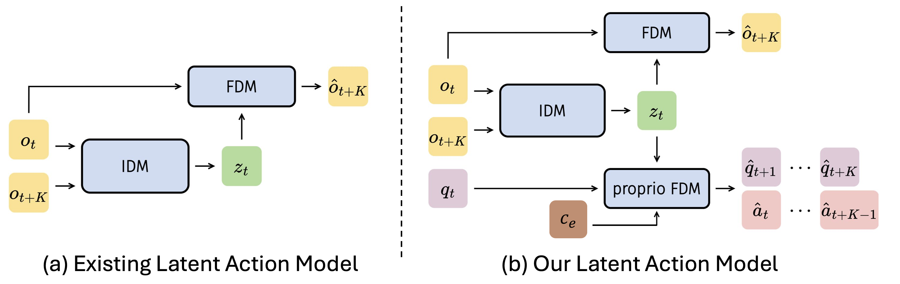
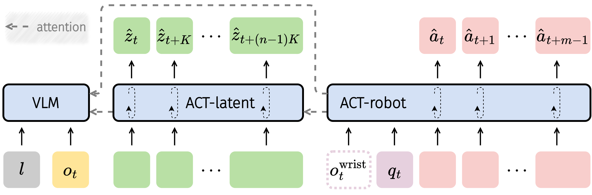
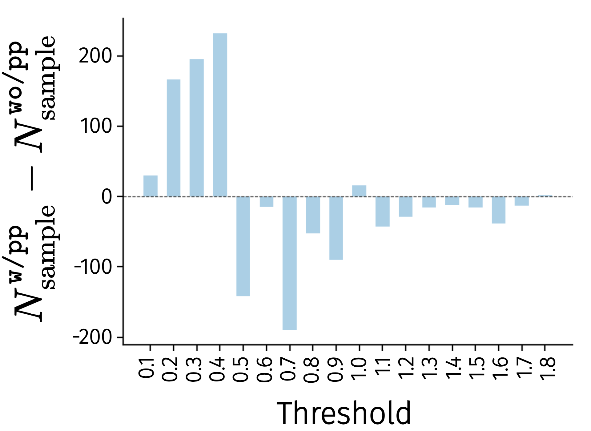
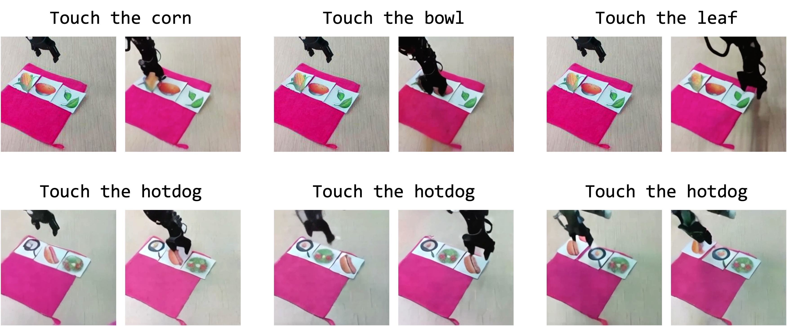
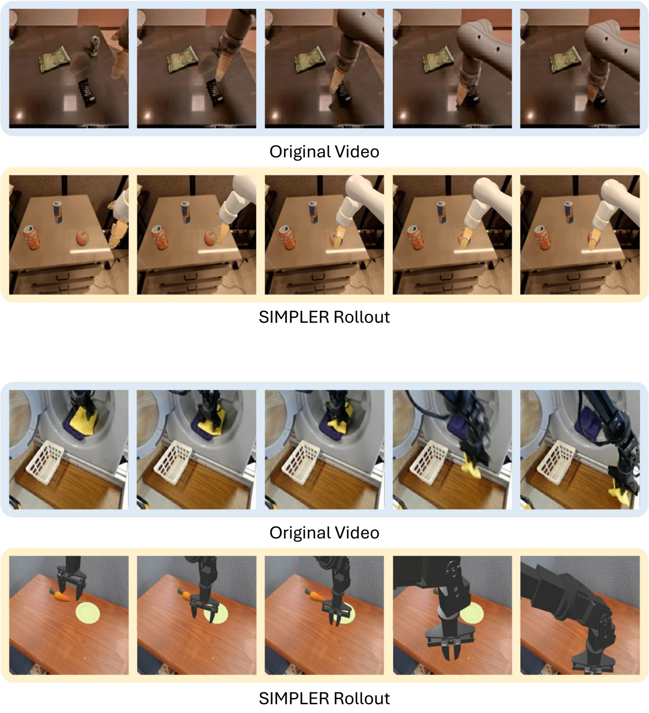

villa-X: Enhancing Latent Action Modeling in Vision-Language-Action Models
中文精读报告：villa-X 是一篇关于 Vision-Language-Action (VLA) 模型中 latent action modeling 的论文。它的主张是：latent action 不应只压缩视觉变化，还要用机器人 proprioception 让它和真实物理动作对齐；并且策略模型应显式地先规划 latent action，再条件化生成 robot action。
目录
1. 论文速览
| 论文要解决什么 | 已有 VLA 通过 latent action 利用无动作视频数据，但 latent action 往往只由视觉重建学到，容易忽略末端旋转、夹爪开合等像素变化小但控制关键的动作。同时，很多方法只是把 latent action 当预训练中间任务或独立 token，未能充分把它用于 robot action 生成。villa-X 要解决“latent action 怎么学得更物理”和“怎么更有效地接入 VLA policy”这两件事。 |
|---|---|
| 作者的方法抓手 | 两个抓手：第一，在 Latent Action Model (LAM) 里加入 proprioceptive FDM，让 latent action 不只重建未来图像，还预测未来机器人 proprio states 和 actions，并用 embodiment context 区分不同机器人/控制频率；第二，在 ACT policy 中用 joint diffusion 同时预测 latent actions 和 robot actions，让 robot action expert 显式条件化在 latent action expert 的计划上。 |
| 最重要的结果 | SIMPLER 上 villa-X 达到 Google Robot 平均 77.7%、WidowX 平均 62.5%，优于多类 VLA/latent-action/visual-trace baseline；LIBERO 四套件平均 90.1%，高于 w/o latent 的 81.9%；真实 Realman 和 XHand 平台上也整体优于 GR00T、GR-1 和 w/o latent 版本。ACT-latent 还展示了对未见 Realman 机械臂和开放词汇符号卡片的 zero-shot latent planning。 |
| 阅读时要注意的点 | 不要把 villa-X 理解为单纯“多加一个 latent token”。它的关键在于 latent action 的训练目标被 proprio-FDM 物理约束，且 policy 结构把 latent action 和 robot action 放进同一个 flow/diffusion 生成过程。也要注意，latent expert 的 zero-shot 展示是经 world/FDM 渲染验证的“计划能力”，并不等同于所有新平台上无微调真实执行。 |

2. 背景与问题设定
为什么 latent action 重要
VLA 模型需要从视觉和语言生成机器人动作，但真实 robot action 标注昂贵、跨机器人形态不统一。latent action 的想法是从相邻帧或短视频片段中抽象出“发生了什么动作”的中间 token，把大量 action-free human/robot videos 转化成 pseudo-action supervision，从而帮助 VLA 预训练。
问题在于：如果 latent action 只服务于图像重建，它学到的可能是“视觉上变化大的东西”，而不是“控制上重要的东西”。例如夹爪开合、末端旋转、微小接触动作在像素上变化不大，却决定任务成败。
两大问题
- 如何更好地学习 latent action：从纯视觉压缩变成视觉 + proprioceptive dynamics 的联合约束。
- 如何更好地使用 latent action：不是只做预训练头、teacher forcing 或独立规划，而是在 policy 内联合建模 latent action sequence 与 robot action chunk。
3. 方法细节
3.1 总体训练流程
villa-X 包含两个核心模块：LAM 负责从 observation pair 中提取 physically grounded latent actions；ACT 负责基于 VLM 特征、latent actions、proprio state 和 embodiment context 生成真实 robot action。训练分三阶段：LAM pretraining、ACT joint latent-robot pretraining、embodiment-specific finetuning。
3.2 Latent Action Model (LAM)
标准 LAM 通常由 IDM + visual FDM 构成。IDM 从两帧预测 latent token，FDM 用当前帧和 latent token 重建未来帧：
$$z_t=\text{IDM}(o_t,o_{t+K}),\quad \hat{o}_{t+K}=\text{FDM}(o_t,z_t)$$
villa-X 加入 proprio-FDM，让同一个 \(z_t\) 还必须预测未来 K 步机器人状态和动作：
$$(\hat{q}_{t+1},...,\hat{q}_{t+K},\hat{a}_{t+1},...,\hat{a}_{t+K})=\text{proprio-FDM}(q_t,z_t,c_e)$$
其中 \(c_e=f(\text{dataset ID},\text{control frequency})\)，dataset ID 用 learnable embedding，控制频率用 sinusoidal features + MLP。这样做的目的不是把不同机器人的差异塞进 latent action，而是把 embodiment-specific dynamics 交给 context，保留更一致的 latent action space。
3.3 LAM 实现细节
- IDM 是 ST-Transformer，输入默认 \(8\times224\times224\) video clip，patch size 14，12 个 ST blocks，hidden dim 768，32 heads。
- VQ codebook size 为 32；训练时使用离散 token，但下游采用 codebook center 的连续向量作为 latent action。
- Image reconstruction FDM 是 12-layer ViT-base；proprio-FDM 是 2-layer MLP，双输出头预测 future states/actions。
- LAM batch size 512，学习率 \(1.5\times10^{-4}\)，2000 step warmup，约 128 张 A100 训练 4 天。
- 人类视频没有 proprio labels 时，省略 proprio-FDM loss，只使用视觉 FDM 目标。
3.4 Actor Module (ACT)
ACT 把 latent action 与 robot action 放入一个显式分解的 policy：
$$\pi(a_{t:t+m-1},z^K_{t:t+(n-1)K}|o_t,l,q_t,c_e)=\pi_{\text{robot}}(a_{t:t+m-1}|z^K_{t:t+(n-1)K},o_t,l,q_t,c_e)\cdot\pi_{\text{latent}}(z^K_{t:t+(n-1)K}|o_t,l)$$
ACT 包含三部分：VLM 编码视觉语言输入；ACT-latent 预测 mid-level latent action plan；ACT-robot 在 VLM 特征、predicted latent actions、proprio state 和 embodiment context 条件下生成低层动作 chunk。

3.5 Joint diffusion / flow matching
实现上，villa-X 用 conditional flow matching 建模 latent actions 和 robot actions 的 joint distribution。将目标动作组记作 \(x_t\)，条件输入记作 \(O_t=(o_t,l,q_t,c_e)\)，训练目标为：
$$L_\tau(\theta)=\mathbb{E}_{p(x_t|O_t),q(x_t^\tau|x_t)}\|v_\tau^\theta(x_t^\tau,O_t)-u(x_t^\tau|x_t)\|^2$$
其中 \(x_t^\tau=\tau x_t+(1-\tau)\epsilon\)，网络预测 denoising vector field \(u(x_t^\tau|x_t)=\epsilon-x_t\)。显式 factorization 通过 block-wise causal attention mask 实现。
3.6 防止 latent shortcut 的 masking
如果 robot action branch 过度依赖 latent tokens，可能学习到脆弱捷径。作者在训练中随机 mask robot-to-latent attention：50% 情况下完全 mask robot-to-latent attention；否则随机 mask 50% latent tokens。附录消融显示 attention mask 和 embodiment context 都有帮助。
4. 实验与结果
4.1 LAM 是否学到更好的 latent actions
作者比较加入 proprio-FDM 的 \texttt{w/pp} 和不加入的 \texttt{wo/pp}。在 LIBERO 上冻结 LAM 后，用 3-layer MLP 从 latent action 预测 robot action，并统计最大 L1 error。结果显示 \texttt{w/pp} 在小误差 bin 中样本更多，高误差 bin 中样本更少，说明 proprio-FDM 让 latent action 携带更多低层动作信息。

4.2 SIMPLER 消融
| 方法 | Google Avg. | WidowX Avg. | 含义 |
|---|---|---|---|
| Ours | 58.5 | 40.8 | 完整 LAM + ACT 设计。 |
| wo/pp | 57.4 | 32.3 | 没有 proprio-FDM，WidowX 上下降明显。 |
| wo/LAM | 35.0 | 33.1 | 不使用 latent action，Google 上大幅下降。 |
| LAPA-style | 43.8 | 1.0 | 两阶段 latent-action 预训练后换 action head，结构性传递弱。 |
| Go-1-style | 32.8 | 14.8 | 独立 latent planner + robot action prediction，不如 joint diffusion。 |
这张表对应两个结论：proprio-FDM 改善 latent action 质量；ACT 的 joint latent-robot modeling 比 LAPA/Go-1 风格接入更有效。
4.3 ACT-latent 的 zero-shot 计划能力
作者在未见过的 Realman 机械臂上测试 ACT-latent。给定起始图和语言命令，如 “touch the corn”，ACT-latent 先生成 latent action sequence，再通过单独训练的 world/image FDM 渲染成视频。结果显示模型能识别开放词汇符号卡片并生成合理触碰/移动计划。

4.4 SIMPLER 主结果
| 方法 | Google Avg. | WidowX Avg. | 备注 |
|---|---|---|---|
| RT-1-X* | 49.4 | 1.1 | pretraining 后直接评估。 |
| RoboVLMs | 60.8 | 37.5 | VLA baseline。 |
| π0-FAST | 61.9 | 32.1 | 强 VLA/action baseline。 |
| GR00T-N1.5 | 57.9 | 62.0 | world modeling / future embedding alignment。 |
| Magma | 62.3 | 44.8 | visual trace 方法。 |
| MoTo | 59.2 | N/A | latent-action 方法。 |
| LAPA | N/A | 57.3 | latent-action 方法。 |
| Ours w/o latent | 36.5 | 49.0 | 移除 latent action expert。 |
| Ours | 77.7 | 62.5 | Google/WidowX 平均最高。 |
SIMPLER 结果说明：villa-X 在两类机器人上都达到强性能，且与 w/o latent 的差距证明 latent-action expert 对最终策略有实质贡献。
4.5 真实机器人结果
真实平台有两个：Realman RM75 + Inspire gripper，以及 XArm + 12-DoF XHand dexterous hand。Realman 用 375 条 teleop trajectories 微调，5 个任务各 75 条；XHand 使用 4000 条、13 类任务的 XHand Dataset 微调，预训练中未使用 dexterous-hand 数据，因此能测试 embodiment transfer。

| Realman 指标 | GR00T | Ours w/o latent | Ours |
|---|---|---|---|
| Pick in | 30 | 40 | 30 |
| Pick out | 70 | 80 | 100 |
| Push | 10 | 30 | 50 |
| Stack | 10 | 60 | 50 |
| Unstack | 60 | 70 | 100 |
| Change block color | 50 | 40 | 60 |
| Change table cover | 30 | 30 | 60 |
| XHand 任务 | Ours seen | Ours unseen | 关键结论 |
|---|---|---|---|
| Pick & Place | 84 | 68 | 优于 GR-1、GR00T、w/o latent。 |
| Stack Cube | 75 | 50 | unseen object/background 仍保持优势。 |
| Place Cup Upright | 60 | 30 | seen/unseen 均为最高或并列最高。 |
| Pour Water | 60 | 30 | 复杂灵巧操作上仍优于 baseline。 |
| Flick Ball | 50 | 40 | unseen 下高于 baseline。 |
4.6 LIBERO 结果
附录在 LIBERO-Spatial、Object、Goal、Long 四个套件上评估。villa-X 平均 90.1%，高于 π0-FAST 的 85.5%、OpenVLA 的 76.5、Octo-base 的 75.1，也高于自身 w/o latent 的 81.9。四个套件中 full model 分别为 Spatial 97.5、Object 97.0、Goal 91.5、Long 74.5。
5. 附录关键信息
数据规模
预训练数据混合包含 robot data 和 action-free human videos。Robot data 约 1.6M trajectories / 223.5M frames，主要来自 OpenX mixture 和 AgiBot；human videos 约 3.6M clips，来自 Ego4D/EgoHOD、EgoPAT3D、EGTEA、EPIC-KITCHENS、HO-Cap、HOI4D、HoloAssist、RH20T、Something-Something V2 等。
LAM 额外可视化
附录展示相同 latent action 对应的图像对，说明不同 embodiment（包括人类和机器人）中相似 latent action 能对应相似低层行为。还展示了通过 LAM + proprio-FDM 把 robot/human video demonstrations 转成 SIMPLER 机器人动作并执行，验证 latent actions 可以从视频迁移到 robot action。

Embodiment context 消融
去掉 embodiment context 会增加 visual FDM/proprio FDM validation loss。对未见 Realman embodiment 做 action probing 时，Ours 相比 w/o context 在 overall probing loss、xyz、rotation、gripper 上均更低，说明 context 帮助模型分离 embodiment-specific dynamics 并提升新 embodiment 泛化。
policy 消融
附录 policy ablation 显示：Ours 在 Google Avg. 58.5、WidowX Avg. 40.8；w/o mask 下降到 53.2 / 34.0；w/o context 下降到 49.1 / 38.5。说明 attention mask 和 embodiment context 都不是装饰，而是影响 policy 稳定性的关键设计。
6. 复现与实现要点
最小复现路径
- 准备 robot trajectories 和 human videos；robot 数据需包含 observation、state、action、dataset ID、control frequency。
- 训练 LAM：ST-Transformer IDM 从 \(T_{\text{LAM}}=8\) 帧预测 latent tokens；visual FDM 重建未来图像；proprio-FDM 预测 future states/actions；人类视频跳过 proprio loss。
- 将 VQ codebook centers 作为连续 latent actions，给 ACT pretraining 使用。
- 构建 ACT：PaliGemma 3B VLM 编码视觉语言；ACT-latent 和 ACT-robot 分别是 18-layer Transformer experts。
- 用 conditional flow matching 联合训练 latent action sequence 和 robot action chunk；设置 block-wise causal attention 和 robot-to-latent stochastic masking。
- 按目标 embodiment 微调 state/action projection、action decoder 等模块，必要时加入 wrist camera feature。
- 在 SIMPLER/LIBERO/真实机器人上按任务分布评估。
7. 分析、局限与边界
这篇论文最有价值的地方
它把 latent action 从“视频压缩出来的伪动作 token”推进到“被物理状态和动作监督校准过的中间动作表示”。这很重要，因为机器人控制不是单纯视觉预测：很多关键动作在像素上很隐蔽，但在 proprio/action 空间里非常明确。villa-X 的第二个价值是 policy 结构设计，它没有把 latent action 当旁路辅助任务，而是让 ACT-latent 和 ACT-robot 在 joint diffusion 中形成明确依赖，真正把中层计划接到低层控制。
结果为什么站得住
- 证据链比较完整：probing 证明 latent action 更能预测 robot action；SIMPLER 消融证明 proprio-FDM 和 latent action expert 对 policy 有效；主结果证明相对多类 baseline 有优势。
- 评估面宽：SIMPLER 覆盖 Google Robot/WidowX，LIBERO 覆盖 Spatial/Object/Goal/Long，真实世界覆盖夹爪和灵巧手两种 embodiment。
- w/o latent、wo/pp、LAPA-style、Go-1-style、w/o mask、w/o context 等消融能把主要设计逐一拆开验证。
- 附录的数据规模、架构和训练细节较充分，解释了性能来源并暴露了复现成本。
主要局限
- 训练成本极高：百卡级预训练门槛高，普通实验室难以完整复现。
- latent expert 的 zero-shot 还不是完整闭环执行：符号卡片实验主要通过 world/FDM 渲染检验 latent plan，不等同于任意未见机器人上直接成功执行。
- 仍需要 embodiment-specific finetuning：真实 Realman/XHand 都需要对应平台数据微调，不能理解为完全免数据跨机器人泛化。
- proprio grounding 依赖 robot state/action 标注：人类视频没有 proprio 分支，只能通过视觉目标参与 LAM 训练。
- 一些任务仍不完美：Realman Pick in、XHand unseen pour/cup 等仍有明显失败空间，说明 latent action 不是万能桥梁。
阅读时可追问的问题
- proprio-FDM 学到的物理 grounding 到底对哪些动作最有帮助：旋转、夹爪、接触还是长程移动？
- continuous codebook centers 比离散 token 在 ACT 中更稳定的原因是什么？
- ACT-latent 预测的 latent plan 是否可被单独评估、筛选或用 VLM critic 纠错？
- 如果用 hand pose、end-effector keypoints 替代 proprio state，能否更好利用人类视频？
- w/o latent 在某些真实任务上也不差，哪些场景 latent action expert 真正提供最大收益？